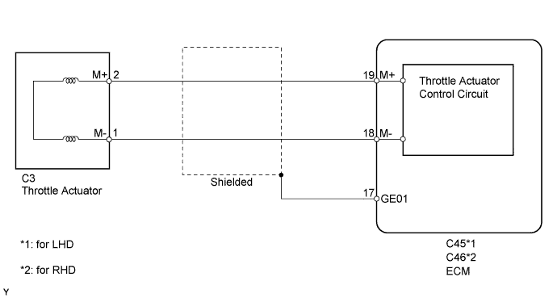
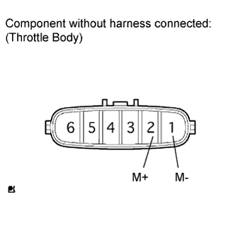
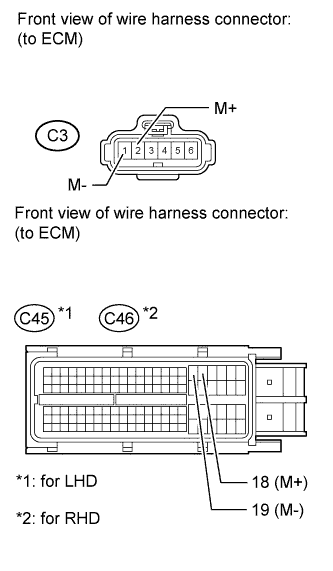

DTC P2102 Throttle Actuator Control Motor Circuit Low |
DTC P2103 Throttle Actuator Control Motor Circuit High |
| DTC Code | DTC Detection Condition | Trouble Area |
| P2102 | Conditions (a) and (b) continue for 2.0 seconds (1 trip detection logic): (a) The throttle actuator duty ratio is 80% or more. (b) The throttle actuator current is below 0.5 A. |
|
| P2103 | Either of the following conditions are met (1 trip detection logic):
|
|

| 1.INSPECT THROTTLE BODY ASSEMBLY (RESISTANCE OF THROTTLE ACTUATOR) |
 |
Disconnect the throttle body connector.
Measure the resistance according to the value(s) in the table below.
| Tester Connection | Condition | Specified Condition |
| 2 (M+) - 1 (M-) | 20°C (68°F) | 0.3 to 100 Ω |
|
| ||||
| OK | |
| 2.CHECK HARNESS AND CONNECTOR (THROTTLE ACTUATOR - ECM) |
 |
Disconnect the throttle body connector.
Disconnect the ECM connector.
Measure the resistance according to the value(s) in the table below.
| Tester Connection | Condition | Specified Condition |
| C3-2 (M+) - C45-19 (M+) | Always | Below 1 Ω |
| C3-1 (M-) - C45-18 (M-) | Always | Below 1 Ω |
| C3-2 (M+) or C45-19 (M+) - Body ground | Always | 10 kΩ or higher |
| C3-1 (M-) or C45-18 (M-) - Body ground | Always | 10 kΩ or higher |
| Tester Connection | Condition | Specified Condition |
| C3-2 (M+) - C46-19 (M+) | Always | Below 1 Ω |
| C3-1 (M-) - C46-18 (M-) | Always | Below 1 Ω |
| C3-2 (M+) or C46-19 (M+) - Body ground | Always | 10 kΩ or higher |
| C3-1 (M-) or C46-18 (M-) - Body ground | Always | 10 kΩ or higher |
|
| ||||
| OK | |
| 3.INSPECT THROTTLE BODY ASSEMBLY |
Check for foreign objects between the throttle valve and the housing.
|
| ||||
| OK | |
| 4.INSPECT THROTTLE VALVE |
Check if the throttle valve opens and closes smoothly.
|
| ||||
| OK | ||
| ||